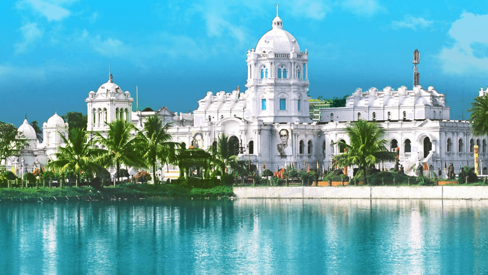
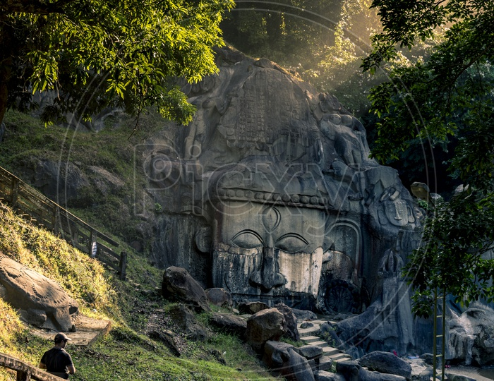
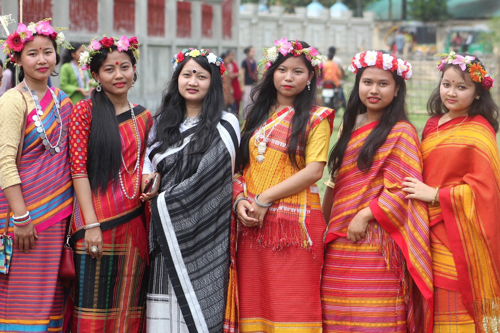
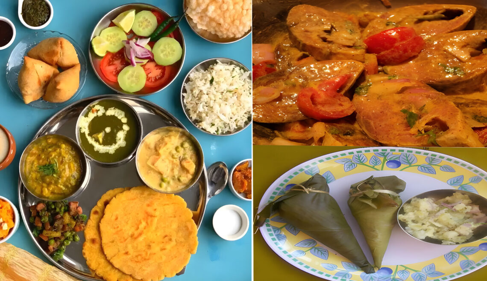

| ✧ Aspect | Information |
|---|---|
| ✧ Capital | Agartala |
| ✧ Chief minister | Biplab Kumar Deb |
| ✧ Largest City | Agartala |
| ✧ Districts | 8 |
| ✧ Official Language | Kokborok |
| ✧ Other Language | Mogh, Chakma, Halam, Garo, Bishnupriya Manipuri, Manipuri, Hindi, Oriya |
| ✧ Population | Approximately 4 million |
| ✧ Area | 10,491.69 square kilometers |
| ✧ Major Rivers | Manu, Gomati, Haora |
| ✧ Major Industries | Rubber, Tea, Bamboo, Handicrafts |
| ✧ Popular Places | Neermahal, Unakoti, Jampui Hills, Tripura Sundari Temple |
The traditional attire of Tripura includes the Risa, Kira, and Rignai for women, and Gamosa and Dhoti for men. These traditional dresses are still worn on cultural occasions and festivals, reflecting the rich heritage of the state.
Tripura, situated in northeastern India, has a history dating back to ancient times. The region was ruled by various indigenous tribes before the advent of recorded history. The Tripuri people, after whom the state is named, have inhabited the region for centuries.
The recorded history of Tripura begins with the rule of the Tripuri kings, who established their kingdom in the region. Over the centuries, Tripura witnessed the influence of various external powers, including the Mughals, the British, and the independent kings of Bengal.
During the British colonial period, Tripura became a princely state under the suzerainty of the British Raj. After India gained independence, Tripura acceded to the Indian Union in 1949. Since then, it has been a part of independent India, undergoing significant development and socio-political changes.
Today, Tripura is known for its diverse culture, natural beauty, and vibrant festivals. The state's economy is primarily agrarian, with agriculture being the mainstay of the majority of the population. Additionally, initiatives are being taken to promote tourism and industrial growth in the region.



